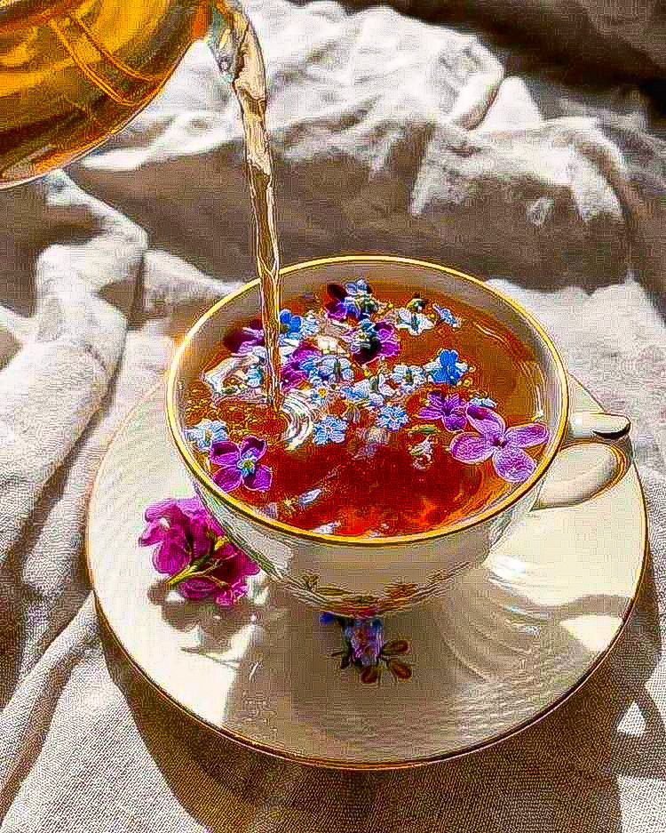

Улун рождается там, где мастерство и терпение соединяются. Его частичная ферментация создаёт волшебство: не зелёный и не чёрный, он — между. Запах — как цветы и сливки, вкус — как вечер в горах: глубокий, но мягкий. Когда завариваешь улун, время будто замедляется. Он учит слушать — не только аромат, но и самого себя.

Пуэр — чай, который не боится лет. Его вкус становится богаче, как старое дерево, что помнит все ветра. Сырые пуэры бодрят, зрелые — умиротворяют. Аромат земли после дождя, густой, немного дымный — это дыхание древних дорог, по которым когда-то караваны везли чай в Тибет. Пуэр не пьётся наспех — его пьют с уважением к прошлому.